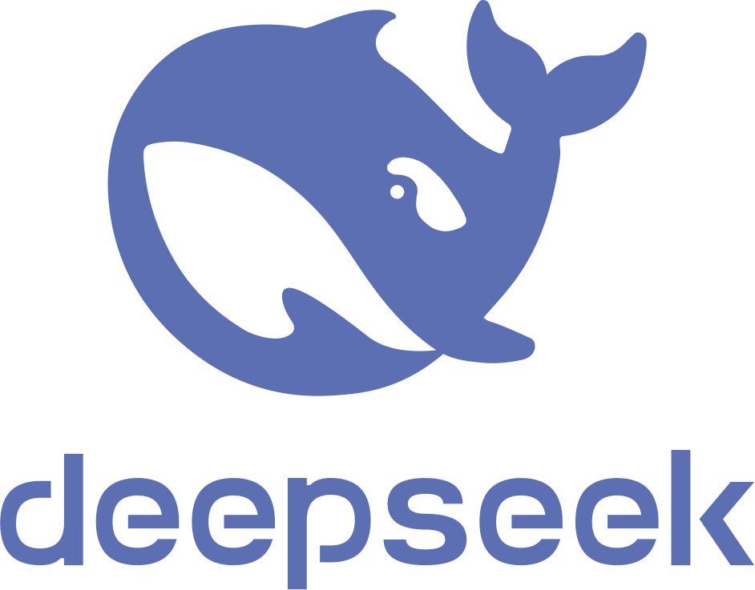

La Inteligencia Artificial Generativa (IAG) es una rama de la inteligencia artificial que se enfoca en la generación de contenido original a partir de datos existentes. Esta tecnología utiliza algoritmos y redes neuronales avanzadas para aprender de textos e imágenes, y luego generar contenido nuevo y único. Los avances en la IAG han sido impresionantes en los últimos años, y se espera que continúen mejorando en el futuro. Liga a la información
Hay distinstas IAs para:
Algunos ejemplos son: